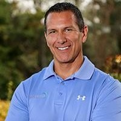

As a teenager, the years of continuously struggling to manage my weight and make healthy lifestyle choices affected my quality of life, as I slowly developed chronic back pain and several risk factors. Consequently, I committed to improving my well-being by consuming nutrient dense foods, limiting sugary and highly processed foods, and engaging in daily physical activity. The challenges that I faced throughout this experience sparked my interest in pursuing kinesiology and helping others achieve healthy lifestyles through sustainable, habit-building methods. My own fitness journey boosted my confidence, discipline, and patience as well as more extrovertness.
I understand that fitness can be initimidating and misleading, marketing influenced information on social media. I offer a realistic, yet empathetic approach to helping my clients. I am here to listen and serve you!
Fitness can teach one the priceless life skills that are applicable to other aspects of life.
Ensure that all Physical Activity Team Members are developing and executing best practices in accordance with industry standards and company operational guidelines. Regularly track and measure department performance, providing monthly reports on consultations, sessions serviced, scheduling, and individual staff performance.
Provided individualized coaching through evidence based principles. Sessions serviced in-person and/or virtual platform.
Provided fitness evaluations of client’s abilities, needs, and physical conditions, to develop and implement progressive, individualized exercise programs to meet any special requirements.
Designed individualized exercise programs to meet clients’ health and wellness goals. Assisted in events, campaigns, and competitions hosted by the fitness center.
John B.- "I had the pleasure of hiring Alex into his first personal training job. He quickly became a leader on the team with his academic expertise in the field along with his drive to contribute to the team's success. Always a reliable employee he quickly rose to take on responsibility leading the way in new or ongoing projects and programs. These traits lead me to recruit Alex to assist in acting as a subject matter expert for PTA Global. I 100% endorse Alex as someone that will work hard, work smart and work for the betterment of himself and his team."
Aurora C.- Alex was my direct report at Plus One Health Management, Facebook. As his General Manager, I was fortunate to work with him when he was the Director of Personal Training for Facebook's largest on-campus gym. Alex was more than an effective leader and motivator. He dealt with clients, peers, and subordinates professionally and warmly. He took time to develop his team and get the best out of them: out of nearly 300 sites nationwide, his Personal Training department had some of the highest sales, highest client retention, and ranked 2nd nationwide in new client FMS screens - a new product and KPI to our company. He is an extremely efficient worker, and leverages his efficiency and ability to delegate to take on tasks outside of his role - frequently helping at other sites and on projects outside of his department. When presented with a problem, Alex would analyze data, multiple options, and leverage input from other departments to contribute to a solution, and would constantly reevaluate his results to ensure he was still on the right track. His department created some of the most viral engagement content seen at the company too - he had his team create educational videos, brochures, and presentations on a variety of subjects. This content not only drove business and client engagement, but served as fun team building for his department. Speaking of his team - his was the only team that was 100% hybridized to teach group fitness, personal training, small group, and cover facilities in the local region, no cliques in his team. He was an absolute joy to manager and work with."
The purpose of this recommendation is to recognize Alexander Lao for his participation as a Subject Matter Expert (SME) in the PTA Global Job Task Analysis (JTA). The JTA was conducted in late 2018 and early 2019 to create a new NCCA Accredited Certified Personal Trainer Exam. This exam will be used for up to five years and not only provides a metric by which to assess the readiness of an individual for the credential of Certified Personal Trainer, but it also helps guide the education of PTA Global as a company. By definition, a JTA defines a particular body of knowledge about an occupational title. The analysis requires the systematic process of collecting, analyzing, and documenting judgments made about important information related to the nature of that job.
Alexander selflessly volunteered his time over a six-month period and being a SME for a project of this magnitude carried a great deal of responsibility. His passion for the fitness industry and heart-felt desire to contribute to its evolution is to be commended.
During my undergraduate studies, I gained a firm foundation in the acute and adaptive effects on those who are inactive, along with the mechanisms involved during early development, aging, and disease. During my internship at the University of California, Davis Medical Center Cardiac Rehabilitation, I provided evaluation assistance for at-risk or post-surgery patients. I witnessed the power of exercise as a natural form of “medication” versus conventional prescribed pills, many of which are known to inflict adverse side effects. Exercise is the one free "pill" that is readily available for anyone, I am here to guide you along your journey to create your desired future.
Upon entering my graduate studies, I desired to be in research, primarily studying the effects exercise on brain health. I had the opportunity to take up a Research Coach position at UCSF Psychiatry Department at the Laurel Heights and Parnassus campuses. The purpose of the study examined whether an aerobic activity training intervention will increase cellular health, improve exercise capacity and blood pressure, and decrease psychological distress over six months in 40 caregivers compared to 40 age-matched wait list control caregivers. I truly enjoyed guiding the participants through weekly coaching calls, texts, and support emails. However, due the nature of the postion, it took a toll on my own mental health. That was the turning moment in my career, I restrategized to move onto the preventative side of health, the fitness industry.